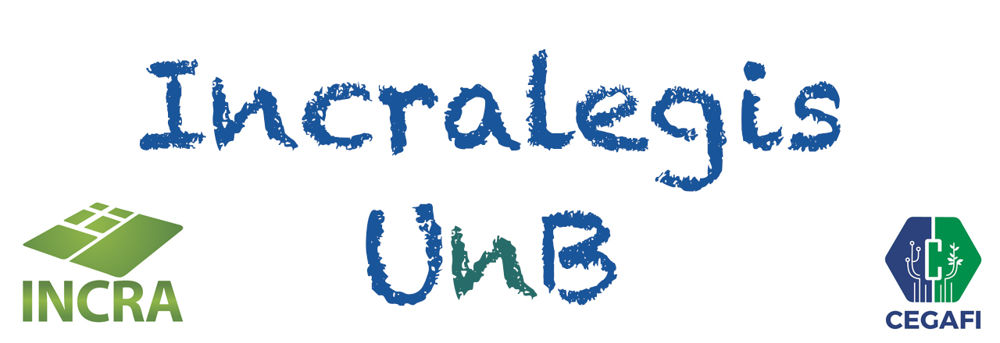

<!--
  Generated template for the HomePage page.

  See http://ionicframework.com/docs/components/#navigation for more info on
  Ionic pages and navigation.
-->
<ion-header>
  <ion-navbar>
    <ion-title></ion-title>
  </ion-navbar>
</ion-header>

<ion-content>
  <div class="cabecalho">
    
  </div>
  <div class="tabela">
    <ion-grid padding >
      <ion-row wrap>
        <ion-col (click)="navegar('ApresentacaoPage')">
          <ion-row justify-content-around class="icone"><ion-icon name="information-circle"></ion-icon></ion-row>
          <ion-row justify-content-around>Apresentação</ion-row>
        </ion-col>
        <ion-col (click)="navegar('SumarioMenuPage')">
          <ion-row justify-content-around class="icone"><ion-icon name="list-box"></ion-icon></ion-row>
          <ion-row justify-content-around>Sumário</ion-row>
        </ion-col>
        <ion-col (click)="navegar('GeralListaPage')">
          <ion-row justify-content-around class="icone"><ion-icon name="paper"></ion-icon></ion-row>
          <ion-row justify-content-around>Geral</ion-row>
        </ion-col>
        <ion-col (click)="navegar('UnbPage')">
          <ion-row justify-content-around class="icone"><ion-icon name="at"></ion-icon></ion-row>
          <ion-row justify-content-around>UnB</ion-row>
        </ion-col>
      </ion-row>
    </ion-grid>
  </div>
</ion-content>
